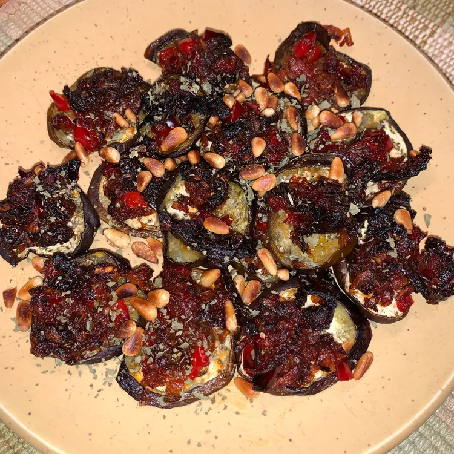

Sweet and Spicy Turkey Sandwich

Pepperjack cheese and strawberry preserves mingle on this turkey sandwich for a sweet and savory lunch. Reviewer Jillian says, "I would have never thought to pair turkey, pepperjack cheese, and strawberry preserves but this definitely works and is a nice departure from your 'run of the mill' turkey sandwich."
Ingredients
- Bread: 2 slices (sourdough, ciabatta, or brioche)
- Turkey:3-4 slices (oven-roasted or smoked)
- Cheese:
- 2-3 slices of jalapeños (fresh or pickled)
- 2-3 slices of tomato
- 1-2 leaves of lettuce (or arugula for extra spice)
- 2-3 slices of red onion
- Veggies & Extras:2 slices (sourdough, ciabatta, or brioche)
- Butter:2 slices (sourdough, ciabatta, or brioche)
Steps:
- Step 1:Prep the Bread
- Step 2:Mix the Sauce
- Step 3:Assemble the Sandwich
- Step 4:Finish and Serve
Back to homepage